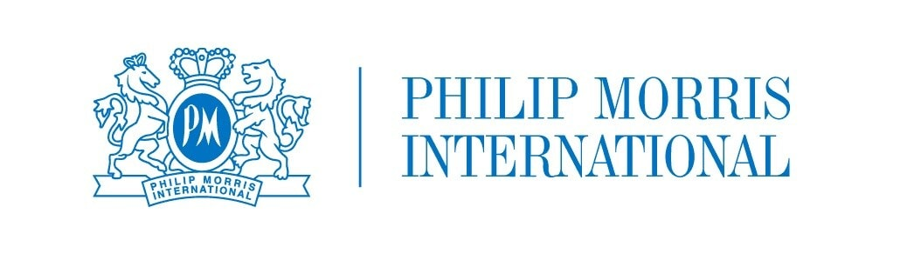

Philip Morris
Руководитель производственного подразделения

- Эффективность оборудования (OEE)
-
Было60–65%Стало80%
- Производственные потери
-
Было4%Стало2%
Ответственность. Команда свыше 50 человек, выполнение плана производства, качество и сроки выпуска.
Что изменил
- Внедрял инструменты бережливого производства: Kaizen, 5S и TPM — автономное и плановое обслуживание оборудования.
- Разработал стандарты ежедневных совещаний и встреч по постоянному улучшению для всей фабрики.
OEE — общая эффективность оборудования. Потери в резюме обозначены как «выбросы на производственных группах».